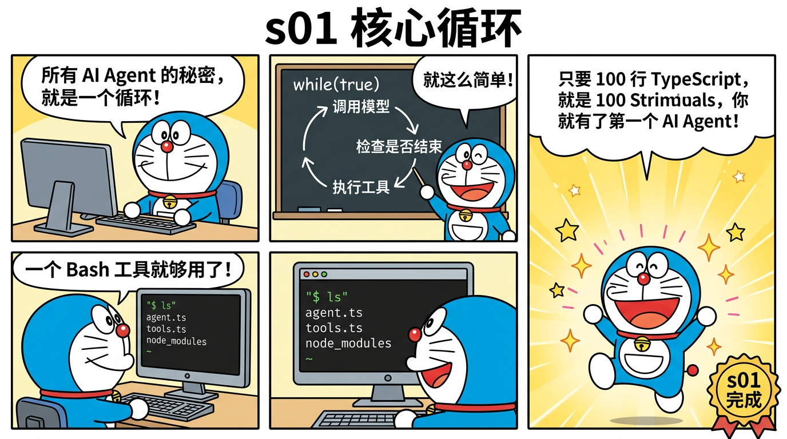
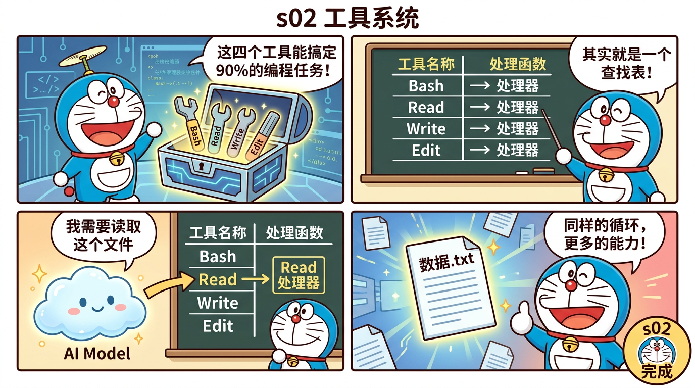
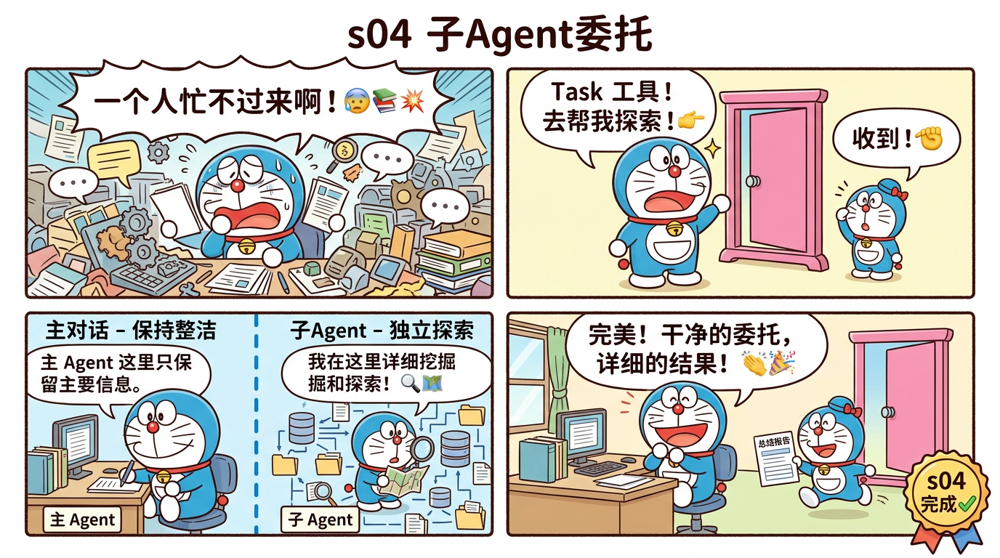
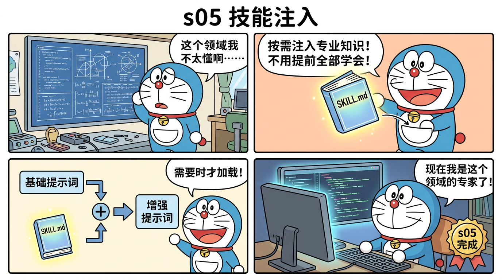
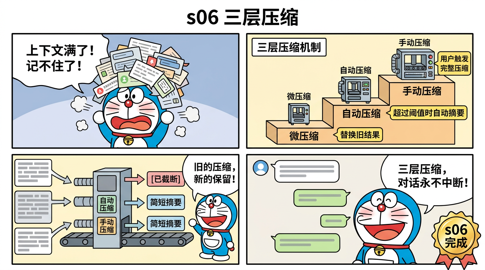
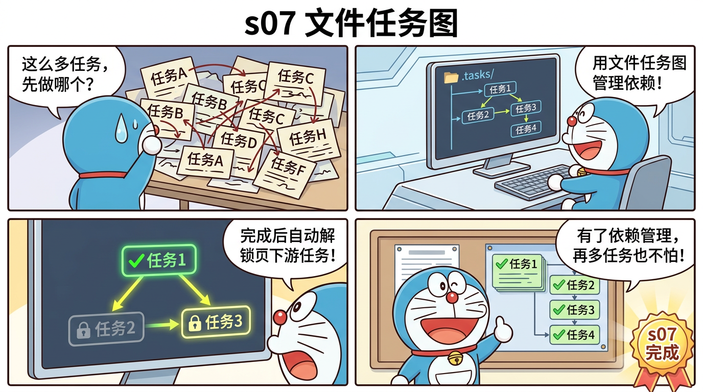
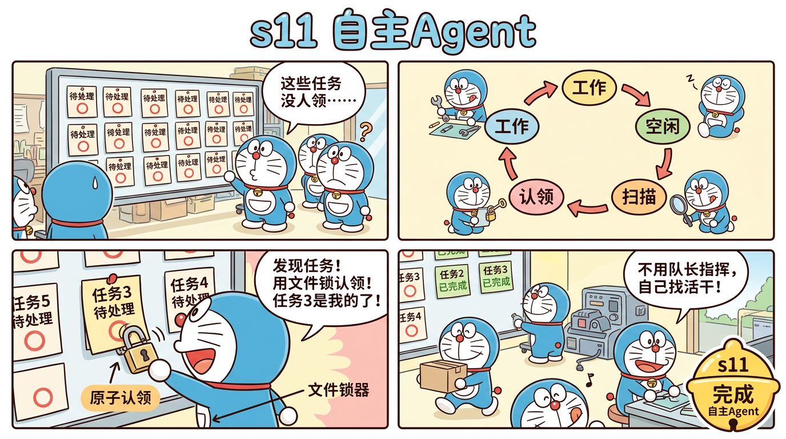
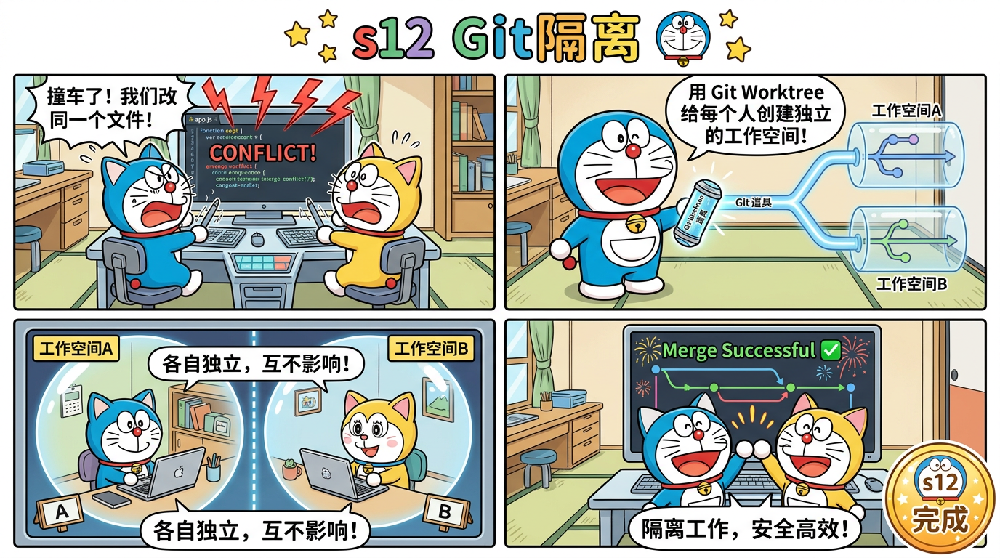

Claude Code 50万行 TypeScript 源码 → 12 个阶段 → 4,250 行教学代码
用最简单的话说：Claude Code 是 Anthropic 做的 AI 编程助手，有 50 多万行 TypeScript 代码。这个项目把它的核心架构蒸馏成 12 个小程序，每个只有几百行，让你从零理解 AI Agent 是怎么工作的。
蒸馏就像把一本 500 页的教科书浓缩成 12 页的笔记——保留核心思想，去掉冗余细节。
👉 快速开始指南
每个阶段都有配套的哆啦A梦漫画、逐行代码讲解、源码映射和动手练习：
| 阶段 | 主题 | 漫画 |
|---|---|---|
| s01 | 核心循环 — 一切的起点 |  |
| s02 | 工具系统 — 分发表模式 |  |
| s03 | 先计划再执行 |  |
| s04 | 子Agent委托 |  |
| s05 | 技能注入 |  |
| s06 | 三层压缩 |  |
| s07 | 文件任务图 |  |
| s08 | 后台并发 |  |
| s09 | Agent团队 |  |
| s10 | 团队协议 |  |
| s11 | 自主Agent |  |
| s12 | Git隔离 |  |
这是一个教学项目，把 Claude Code（Anthropic 的 AI 编程助手，50 万行 TypeScript 源码）蒸馏成 12 个循序渐进的小程序，每个只有几百行代码。
蒸馏就像把一本 500 页的教科书浓缩成 12 页的笔记——保留核心思想，去掉冗余细节。
# 克隆项目
git clone https://github.com/bcefghj/miniclaudecode_typescript.git
cd miniclaudecode_typescript
# 安装依赖
npm installexport ANTHROPIC_API_KEY="sk-ant-你的密钥"npx tsx src/s01_agent_loop.ts你会看到一个命令行提示符 >，输入任何问题，Agent
就会帮你执行命令来回答。
试试输入：
> 帮我看看当前目录有什么文件Agent 会自动调用 ls 命令，然后用中文告诉你结果。
| 阶段 | 学什么 | 一句话总结 | 运行命令 |
|---|---|---|---|
| s01 | 核心循环 | 一个 while 循环 + 一个 Bash 工具 | npx tsx src/s01_agent_loop.ts |
| s02 | 工具系统 | 分发表模式，4 个工具 | npx tsx src/s02_tools.ts |
| s03 | 计划 | TodoWrite 先列计划再执行 | npx tsx src/s03_todo.ts |
| s04 | 子Agent | 独立上下文的任务委托 | npx tsx src/s04_subagent.ts |
| s05 | 技能 | 按需加载 SKILL.md | npx tsx src/s05_skills.ts |
| s06 | 压缩 | 三层上下文压缩 | npx tsx src/s06_compact.ts |
| s07 | 任务图 | 文件存储 + DAG 依赖 | npx tsx src/s07_tasks.ts |
| s08 | 后台 | 非阻塞执行 | npx tsx src/s08_background.ts |
| s09 | 团队 | 异步邮箱通信 | npx tsx src/s09_teams.ts |
| s10 | 协议 | 请求-响应审批 | npx tsx src/s10_protocols.ts |
| s11 | 自主 | 自动认领任务 | npx tsx src/s11_autonomous.ts |
| s12 | 隔离 | Git Worktree | npx tsx src/s12_worktree.ts |
建议：按顺序学习 s01 → s12，每个阶段都在前一个基础上添加新功能。
每次运行会调用 Claude API，费用取决于对话长度。一般调试一个阶段大约花 $0.01-0.10。
可以！设置环境变量：
export MINICC_MODEL="claude-haiku-4-20250514" # 更便宜的模型会比单Agent贵，因为多个Agent各自调用API。建议先用 s01-s08 学习基础，s09-s12 理解概念即可。
准备好了？从 s01 核心循环 开始吧！

用最简单的话说：AI Agent 就是一个”死循环”——不断地问模型、执行工具、再问模型，直到模型说”我搞定了”。
你可能以为 Claude Code 这种 50
万行代码的系统很复杂。但它的核心？其实就是一个 while(true)
循环。
本节只用 约 100 行 TypeScript，就能做出一个能执行 Shell 命令的 AI Agent。
Agent 不是一个普通的聊天机器人。普通聊天机器人就是”你问我答”。Agent 多了一个能力：它可以使用工具。
比如你说”帮我看看当前目录有什么文件”，Agent 会： 1. 理解你的意思 2.
决定调用 ls 命令 3. 拿到结果 4. 把结果用人话告诉你
用户输入 → while(true) {
① 调用模型（发送对话历史 + 可用工具）
② 模型返回：
- 如果是文字 → 打印给用户，结束循环
- 如果是工具调用 → 执行工具，把结果加入对话历史
③ 继续循环
}import Anthropic from "@anthropic-ai/sdk";
import { execSync } from "child_process";
import * as readline from "readline";
const client = new Anthropic();
const MODEL = process.env.MINICC_MODEL || "claude-sonnet-4-20250514";@anthropic-ai/sdk：官方 SDK，帮你调用 Claude APIexecSync：Node.js 内置的”执行 Shell 命令”函数readline：Node.js 内置的命令行输入工具client：API 客户端实例，它会自动读取环境变量
ANTHROPIC_API_KEYconst TOOLS: Anthropic.Tool[] = [
{
name: "Bash",
description: "Run a shell command and return stdout/stderr.",
input_schema: {
type: "object",
properties: {
command: { type: "string", description: "The bash command to execute" },
},
required: ["command"],
},
},
];这就是”告诉模型你有什么工具可以用”。格式遵循 JSON Schema。模型会根据这个描述来决定什么时候调用什么工具。
function runBash(command: string): string {
try {
return execSync(command, {
encoding: "utf-8",
timeout: 30_000, // 超时 30 秒
cwd: process.cwd(), // 在当前目录执行
}).slice(0, 10_000); // 最多返回 1 万字符
} catch (e: unknown) {
const err = e as { stderr?: string; message?: string };
return `Error: ${err.stderr || err.message}`;
}
}注意几个安全措施： - 超时保护：防止命令卡住 - 输出截断：防止返回太多内容浪费 token - 错误捕获：命令失败也不会崩溃
async function agentLoop(query: string) {
const messages: Anthropic.MessageParam[] = [
{ role: "user", content: query },
];
while (true) {
// ① 调用模型
const response = await client.messages.create({
model: MODEL,
max_tokens: 4096,
system: "You are a coding assistant. Use the Bash tool to help the user.",
tools: TOOLS,
messages,
});
// 把模型的回复加入对话历史
messages.push({ role: "assistant", content: response.content });
// ② 检查退出条件：模型没有调用工具 → 结束
if (response.stop_reason !== "tool_use") {
const text = response.content
.filter((b): b is Anthropic.TextBlock => b.type === "text")
.map((b) => b.text)
.join("\n");
console.log(text);
return;
}
// ③ 执行工具，收集结果
const results: Anthropic.ToolResultBlockParam[] = [];
for (const block of response.content) {
if (block.type === "tool_use") {
const { command } = block.input as { command: string };
console.log(`$ ${command}`);
const output = runBash(command);
results.push({
type: "tool_result",
tool_use_id: block.id,
content: output,
});
}
}
// 把工具结果加入对话历史
messages.push({ role: "user", content: results });
// 回到循环顶部 → 继续调用模型
}
}这就是整个 Agent 的核心！ 所有后续的 s02-s12 都是在这个循环基础上叠加功能。
messages 数组就像一个”对话记忆”：
[user] "帮我看看目录"
[assistant] tool_use: Bash({command: "ls"})
[user] tool_result: "file1.ts\nfile2.ts"
[assistant] "当前目录有 file1.ts 和 file2.ts 两个文件"每一轮循环，模型都能看到完整的对话历史，包括之前所有的工具调用和结果。
| 蒸馏版 | Claude Code 原版 | 原始行数 |
|---|---|---|
agentLoop() |
query.ts:queryLoop |
1,730 行 |
messages[] |
types/messages.ts |
95 行 |
while(true)+break |
for(;;) { if stop_reason≠tool_use break } |
— |
| 总计 | 1,825 → ~100 行 (18:1) |
# 安装依赖
cd miniclaudecode_typescript
npm install
# 设置 API Key
export ANTHROPIC_API_KEY="你的密钥"
# 运行 s01
npx tsx src/s01_agent_loop.ts然后试试输入： - 帮我看看当前目录有什么文件 -
创建一个 hello.txt 文件，内容写 Hello World -
查看系统信息
tool_result 要放在
role: "user" 里？ 提示：想想 Claude API
的消息格式要求。timeout: 30_000
去掉，可能会发生什么？下一节：s02 工具系统 — 从 1 个工具到 4 个工具，学习分发表模式

上一节我们用一个 Bash 工具就能干活了。但只能执行命令，不够优雅。
这一节增加到 4 个工具（Bash、Read、Write、Edit），并学习一个重要设计模式：分发表（Dispatch Map）。
循环不变，工具随便加——这就是可扩展的秘密。
type ToolHandler = (input: Record<string, unknown>) => string;
const TOOL_HANDLERS: Record<string, ToolHandler> = {
Bash: (input) => { /* 执行命令 */ },
Read: (input) => { /* 读取文件 */ },
Write: (input) => { /* 写入文件 */ },
Edit: (input) => { /* 编辑文件 */ },
};白话解释：分发表就像一本”电话簿”——模型说”我要用 Read 工具”，我们查电话簿找到 Read 对应的处理函数，然后执行它。
加新工具？往电话簿里加一条就行，循环一行都不用改。
和 s01 一样，执行 Shell 命令。这是最灵活的工具。
Read: (input) => {
const lines = readFileSync(resolve(input.file_path as string), "utf-8").split("\n");
const start = Math.max(0, ((input.offset as number) ?? 1) - 1);
const end = input.limit ? start + (input.limit as number) : lines.length;
return lines.slice(start, end)
.map((l, i) => `${String(start + i + 1).padStart(6)}|${l}`)
.join("\n") || "(empty)";
},特点： -
带行号输出（1|内容），方便模型定位代码 -
支持 offset 和 limit
参数，可以只读文件的一部分
Write: (input) => {
const p = resolve(input.file_path as string);
const dir = dirname(p);
if (!existsSync(dir)) mkdirSync(dir, { recursive: true });
writeFileSync(p, input.content as string, "utf-8");
return `File written: ${p}`;
},特点：自动创建目录——如果写
a/b/c/file.txt，会自动创建 a/b/c/。
Edit: (input) => {
const content = readFileSync(p, "utf-8");
const old = input.old_string as string;
const count = content.split(old).length - 1;
if (count === 0) return `Error: old_string not found`;
if (count > 1) return `Error: found ${count} times — must be unique`;
writeFileSync(p, content.replace(old, input.new_string as string));
return `Edited: ${p}`;
},关键约束：old_string 必须在文件中唯一出现。这防止了模型修错地方。
for (const b of response.content) {
if (b.type !== "tool_use") continue;
const input = b.input as Record<string, unknown>;
// 查分发表 → 执行 → 收集结果
const handler = TOOL_HANDLERS[b.name];
const output = handler ? handler(input) : `Unknown tool: ${b.name}`;
results.push({ type: "tool_result", tool_use_id: b.id, content: output });
}循环逻辑和 s01 完全一样，唯一的变化是用
TOOL_HANDLERS[b.name] 查表代替了硬编码。
| 蒸馏版 | Claude Code 原版 | 原始行数 |
|---|---|---|
TOOL_HANDLERS |
tools.ts:getAllBaseTools() |
450 行 |
| 分发表 | Map<string, Tool> + buildTool() |
350 行 |
| Bash | BashTool.tsx |
650 行 |
| Read | ReadTool.tsx |
230 行 |
| Write | WriteTool.tsx |
180 行 |
| Edit | EditTool.tsx |
460 行 |
| 总计 | 2,320 → ~200 行 (11.6:1) |
npx tsx src/s02_tools.ts试试这些输入： - 读取 package.json 的前 10 行 -
创建一个 test.ts 文件，写一个 hello world 函数 -
把 test.ts 里的 hello 改成 hi
下一节：s03 先计划再执行 — 用 TodoWrite 给 Agent 加上计划能力
一句话：给 Agent 一个”待办清单”工具，让它在动手之前先列计划。
没有计划的 Agent 就像没有清单的厨师——可能忘记放盐。TodoWrite 让 Agent 养成”先想后做”的好习惯。
interface TodoItem {
id: string; // 唯一标识，如 "step-1"
content: string; // 任务描述
status: "pending" | "in_progress" | "completed" | "cancelled";
}
let todos: TodoItem[] = [];四种状态： - pending ○ — 还没开始 -
in_progress ◉ — 正在做 - completed ✓ — 做完了
- cancelled ✗ — 不做了
TodoWrite: (input) => {
const items = input.todos as TodoItem[];
for (const item of items) {
const existing = todos.find((t) => t.id === item.id);
if (existing) {
// 已存在 → 更新
existing.content = item.content;
existing.status = item.status;
} else {
// 不存在 → 新建
todos.push(item);
}
}
return renderTodos();
},关键设计：用 id
匹配——存在就更新，不存在就新建。模型可以一次性创建多个
todo，也可以逐个更新状态。
function renderTodos(): string {
const icons = { pending: "○", in_progress: "◉", completed: "✓", cancelled: "✗" };
return todos.map((t) =>
`${icons[t.status]} [${t.status}] ${t.id}: ${t.content}`
).join("\n");
}输出效果：
○ [pending] step-1: 分析需求
◉ [in_progress] step-2: 编写代码
✓ [completed] step-3: 测试验证关键在 system prompt：
system: "Use TodoWrite to plan complex tasks before starting. Read before editing."加了这句话，模型就会在遇到复杂任务时先列计划，再逐步执行。
| 蒸馏版 | Claude Code 原版 | 原始行数 |
|---|---|---|
| TodoWrite 工具 | tools/TodoWriteTool/ |
210 行 |
| todos 状态 | AppState.todos |
45 行 |
| 渲染 | formatTodos() |
80 行 |
| 总计 | 335 → ~250 行 (1.3:1) |
npx tsx src/s03_todo.ts试试： -
帮我重构 package.json，加上 build 和 test 脚本（看看它会不会先列计划）
- 输入 todos 可以随时查看当前计划
in_progress 状态的
todo？下一节：s04 子Agent委托 — 把复杂任务委托给独立的子Agent

一句话：当主 Agent 需要深入探索某个问题时，派一个”子Agent”去干，子Agent干完汇报结果，主Agent的对话保持干净。
这就像老板不用亲自去调研——派助手去，助手回来汇报要点就行。
如果主 Agent 要探索一个大项目的结构，它需要调用很多
Glob、Read、Grep。这些工具的输出会塞满对话历史（messages[]），后面的对话质量会下降。
子 Agent 用独立的 messages[]。主 Agent
只看到子 Agent 的最终总结。
主 Agent messages[]:
[user] "分析这个项目结构"
[assistant] tool_use: Task({description: "探索项目", prompt: "..."})
[user] tool_result: "这个项目有 3 个模块：..." ← 子Agent的总结
子 Agent messages[] (独立的，主Agent看不到):
[user] "探索项目"
[assistant] tool_use: Glob(*.ts)
[user] tool_result: "src/a.ts\nsrc/b.ts\n..."
[assistant] tool_use: Read("src/a.ts")
[user] tool_result: "(200行代码)"
[assistant] "这个项目有 3 个模块..."async function runSubAgent(
description: string,
prompt: string,
depth: number
): Promise<string> {
if (depth > 3) return "Error: max nesting depth reached";
// 独立的消息历史！
const msgs: Anthropic.MessageParam[] = [
{ role: "user", content: prompt }
];
let result = "";
for (let turn = 0; turn < 15; turn++) {
const resp = await client.messages.create({
model: MODEL,
max_tokens: 8192,
system: "You are a focused sub-agent. Complete the task and return a concise summary.",
tools: subTools,
messages: msgs, // ← 注意：是 msgs，不是主Agent的 messages
});
// ... 执行工具 ...
}
return result; // 只返回最终文字给主Agent
}子 Agent 也可以调用 Task 工具（生成子子 Agent），通过
depth 参数限制最多 3 层嵌套。
本节还新增了两个搜索工具：
*.ts）rg /
ripgrep）这让 Agent（特别是子 Agent）能够高效地探索代码库。
| 蒸馏版 | Claude Code 原版 | 原始行数 |
|---|---|---|
| Task 工具 | AgentTool.tsx |
1,397 行 |
| 独立 msgs[] | QueryEngine per invocation |
200 行 |
| depth 限制 | MAX_DEPTH = 3 |
15 行 |
| Glob | GlobTool/ |
280 行 |
| Grep | GrepTool/ |
220 行 |
| 总计 | 2,112 → ~300 行 (7:1) |
npx tsx src/s04_subagent.ts试试： - 分析 src/ 目录下所有文件的功能 -
对比 s01 和 s02 的代码差异
观察终端输出，会看到 ⤷ Sub-agent: 和
⤶ Sub-agent done 标记。
messages[]？
不用独立的会怎样？下一节：s05 技能注入 — 按需加载专业知识

一句话：不是把所有知识塞进系统提示词，而是按需从文件加载——需要什么技能，加载什么技能。
就像哆啦A梦的百宝袋——不是把所有道具提前拿出来，而是需要的时候才掏出来。
技能就是 SKILL.md 文件，放在特定目录下：
项目根目录/
├── .cursor/skills/
│ └── react/SKILL.md ← React 开发技能
├── .minicc/skills/
│ └── testing/SKILL.md ← 测试技能
└── skills/
└── deploy/SKILL.md ← 部署技能每个 SKILL.md
包含该领域的最佳实践、注意事项、代码模板等。
规则是项目级的约定，从这些文件加载： - AGENTS.md — Agent
行为规则 - CLAUDE.md — Claude 专用配置 -
.cursor/rules/*.md — Cursor 规则 -
.minicc/rules/*.md — minicc 规则
function loadSkills(): string {
const dirs = [
join(process.cwd(), ".cursor", "skills"),
join(process.cwd(), ".minicc", "skills"),
join(process.cwd(), "skills"),
];
const skills: string[] = [];
for (const dir of dirs) {
if (!existsSync(dir)) continue;
for (const entry of readdirSync(dir, { recursive: true })) {
if (entry.endsWith("SKILL.md")) {
skills.push(`## Skill: ${entry}\n${readFileSync(join(dir, entry), "utf-8").slice(0, 2000)}`);
}
}
}
return skills.length > 0
? `\n\n# Available Skills\n${skills.join("\n\n")}`
: "";
}function buildSystemPrompt(): string {
return `You are minicc, a coding assistant.
Working directory: ${process.cwd()}
Project: ${basename(process.cwd())}
Tools: Bash, Read, Write, Edit, Glob, Grep, TodoWrite, Task
Rules: Read before editing. Use Edit for changes, Write for new files.
${loadRules()}${loadSkills()}`;
}规则和技能被拼接到系统提示词的末尾——模型开始对话前就能看到。
| 蒸馏版 | Claude Code 原版 | 原始行数 |
|---|---|---|
loadSkills() |
services/skills/ |
620 行 |
loadRules() |
services/prompt/rules.ts |
380 行 |
| AGENTS.md 解析 | projectRules.ts |
290 行 |
| system prompt | services/prompt/system.ts |
450 行 |
| 总计 | 1,740 → ~350 行 (5:1) |
# 创建一个技能文件
mkdir -p .minicc/skills/demo
echo "# Demo Skill\n当用户问到 demo 相关问题时，始终用中文回答。" > .minicc/skills/demo/SKILL.md
# 运行
npx tsx src/s05_skills.ts启动时会显示是否找到了 Skills 和 Rules。
.slice(0, 2000)下一节：s06 三层压缩 — 让对话永不中断的记忆管理

一句话：对话越长，上下文窗口越满。三层压缩让 Agent 能”忘掉细节、记住要点”，实现无限长对话。
这是 Claude Code 最精妙的设计之一——用户毫无感知，Agent 自动管理记忆。
Claude 的上下文窗口有限（200K tokens）。如果你和 Agent 聊了几百轮，对话历史会超出上限导致 API 报错。
做什么：把旧的工具调用结果替换成占位符。
function microCompact(messages: Anthropic.MessageParam[]): void {
let toolResultCount = 0;
// 从后往前数
for (let i = messages.length - 1; i >= 0; i--) {
const msg = messages[i];
// 只处理 tool_result 类型
for (const part of msg.content) {
if (part.type === "tool_result") {
toolResultCount++;
// 保留最近 3 个结果，其余截断
if (toolResultCount > KEEP_RECENT_RESULTS) {
if (content.length > 100) {
part.content = `[Previous tool result truncated — was ${content.length} chars]`;
}
}
}
}
}
}效果：一个 5000 字符的文件读取结果变成
[Previous tool result truncated — was 5000 chars]。
触发时机：每一轮循环都自动运行。
做什么：当估算 token 数超过阈值，自动触发完整压缩。
function estimateTokens(messages: Anthropic.MessageParam[]): number {
return Math.ceil(JSON.stringify(messages).length / 4);
}
async function autoCompact(messages: Anthropic.MessageParam[]): Promise<Anthropic.MessageParam[]> {
const tokens = estimateTokens(messages);
if (tokens < COMPACT_THRESHOLD || messages.length < 8) return messages;
console.log(`[Auto-compact: ~${tokens} tokens → summarizing]`);
return compactConversation(messages);
}触发时机：当 token 估算值超过 80,000。
做什么： 1.
把旧消息保存到磁盘（.transcripts/ 目录） 2.
用模型生成旧消息的摘要 3. 用摘要替换旧消息，只保留最近 6 条
async function compactConversation(messages: Anthropic.MessageParam[]) {
const keepRecent = messages.slice(-6); // 保留最近 6 条
const toSummarize = messages.slice(0, -6); // 其余生成摘要
// 1. 持久化到磁盘
for (const msg of toSummarize) {
appendFileSync(transcriptPath, JSON.stringify(msg) + "\n");
}
// 2. 调用模型生成摘要
const summaryResp = await client.messages.create({
system: "Summarize this conversation concisely...",
messages: [{ role: "user", content: JSON.stringify(toSummarize) }],
});
// 3. 组装新消息
return [
{ role: "user", content: `[Conversation compacted]\n## Summary:\n${summaryText}` },
{ role: "assistant", content: "Understood. I have the context..." },
...keepRecent,
];
}触发时机：用户输入 compact 或模型调用
Compact 工具。
每轮循环:
├── 第一层: microCompact (替换旧结果) ← 总是运行
├── 第二层: autoCompact (检查阈值) ← 超阈值时运行
└── 第三层: compact (完整压缩) ← 手动触发| 蒸馏版 | Claude Code 原版 | 原始行数 |
|---|---|---|
microCompact() |
microCompact.ts |
530 行 |
autoCompact() |
autoCompact.ts |
351 行 |
compactConversation() |
compact.ts |
1,705 行 |
.transcripts/ |
transcriptStorage.ts |
200 行 |
| 总计 | 2,786 → ~400 行 (7:1) |
npx tsx src/s06_compact.ts多聊几轮后，输入 compact 看看压缩效果。
estimateTokens 用 JSON长度/4
精确吗？ 实际场景如何改进？下一节：s07 文件任务图 — 用 DAG 管理复杂任务依赖

一句话：s03 的 TodoWrite 存在内存里，重启就没了。s07 用文件存储任务，还支持任务之间的依赖关系（DAG）。
“任务 B 依赖任务 A” = “A 没完成，B 就不能开始”。
interface Task {
id: string;
subject: string; // 短标题
description: string; // 详细描述
status: "pending" | "in_progress" | "completed";
owner?: string; // 谁在做
blocks: string[]; // 我完成后可以解锁哪些任务
blockedBy: string[]; // 谁没完成我就不能开始
}每个任务保存为独立 JSON 文件：
.tasks/
├── task_1.json ← {"id":"1","subject":"设计接口",...}
├── task_2.json ← {"id":"2","subject":"实现功能","blockedBy":["1"],...}
└── task_3.json ← {"id":"3","subject":"写测试","blockedBy":["2"],...}create(subject, description, blockedBy = []) {
const task = { id, subject, description, status: "pending", blocks: [], blockedBy };
// 关键：更新上游任务的 blocks 数组
for (const bid of blockedBy) {
const blocker = this.get(bid);
if (blocker) blocker.blocks.push(id);
}
this.save(task);
}
// 任务完成时，自动解除下游的依赖
update(id, { status: "completed" }) {
if (status === "completed") {
for (const other of this.listAll()) {
const idx = other.blockedBy.indexOf(id);
if (idx !== -1) {
other.blockedBy.splice(idx, 1); // 删除依赖
this.save(other);
}
}
}
}效果：任务 1 完成后，任务 2 的
blockedBy 自动清空，变成可执行状态。
○ #1 [pending] 设计接口
○ #2 [pending] 实现功能 [blocked by: 1]
○ #3 [pending] 写测试 [blocked by: 2]完成 #1 后：
✓ #1 [completed] 设计接口
○ #2 [pending] 实现功能 ← 不再被阻塞！
○ #3 [pending] 写测试 [blocked by: 2]| 特性 | s03 TodoWrite | s07 Tasks |
|---|---|---|
| 存储 | 内存 | 文件 (.tasks/) |
| 持久化 | 否 | 是 |
| 依赖关系 | 无 | DAG |
| 自动解锁 | 无 | 有 |
| 多人协作 | 不支持 | 支持 (owner) |
| 蒸馏版 | Claude Code 原版 | 原始行数 |
|---|---|---|
TaskManager |
utils/tasks.ts |
862 行 |
task_create |
TaskCreateTool/ |
138 行 |
task_update |
TaskUpdateTool/ |
406 行 |
| 总计 | 1,566 → ~350 行 (4.5:1) |
npx tsx src/s07_tasks.ts试试： -
创建三个任务：设计、实现、测试，后面的依赖前面的 - 输入
tasks 查看任务状态 -
完成第一个任务，再看看任务状态变化
in_progress 吗？下一节：s08 后台并发 — 让 Agent 边等边干别的
一句话：npm install 要跑 30 秒，Agent
不用傻等——把它扔到后台，继续干别的。
之前所有的工具调用都是同步阻塞的：执行命令时 Agent 什么都不能做。后台并发解决了这个问题。
阻塞 (s01-s07):
Agent → Bash("npm install") → 等30秒 → 拿到结果 → 继续
非阻塞 (s08):
Agent → background_run("npm install") → 立刻返回 → 继续干别的
↓
30秒后通知："npm install 完成了"class BackgroundManager {
private tasks = new Map<string, BgTask>();
private notifications: Notification[] = [];
run(command: string): string {
const id = `bg_${this.nextId++}`;
// 用 spawn 而不是 execSync
const child = spawn("bash", ["-c", command], { cwd: process.cwd() });
// 异步收集输出
child.stdout.on("data", (data) => { stdout += data.toString(); });
child.stderr.on("data", (data) => { stderr += data.toString(); });
// 完成时推入通知队列
child.on("close", (code) => {
task.status = code === 0 ? "completed" : "failed";
task.result = stdout + stderr;
this.notifications.push({ taskId: id, status: task.status, ... });
});
return `Started background task ${id}: ${command}`;
}
}关键区别： -
execSync（同步）：调用后程序停住，直到命令完成
-
spawn（异步）：调用后立刻返回，命令在后台跑
async function agentLoop(messages) {
for (let turn = 0; turn < 50; turn++) {
// 每一轮循环开头，检查后台任务完成通知
const notifications = bgMgr.drainNotifications();
if (notifications) {
messages.push({
role: "user",
content: `[System notification]\n${notifications}`
});
}
// ... 正常循环 ...
}
}后台任务完成后，结果作为”系统通知”注入到对话中，模型就能看到了。
| 适合放后台 | 不适合放后台 |
|---|---|
npm install |
读文件（太快了） |
npm run build |
简单的 ls |
npm test |
需要立刻看结果的 |
| 长时间编译 | 交互式命令 |
| 蒸馏版 | Claude Code 原版 | 原始行数 |
|---|---|---|
BackgroundManager |
LocalShellTask/ |
522 行 |
background_run |
BashTool:run_in_background |
80 行 |
| 通知队列 | BackgroundTaskNotifier |
120 行 |
drainNotifications |
query.ts:injectNotifications() |
50 行 |
| 总计 | 772 → ~350 行 (2.2:1) |
npx tsx src/s08_background.ts试试： - 在后台运行 sleep 5 && echo done -
然后立刻输入其他命令 - 输入 bg 查看后台任务状态 - 5
秒后看通知
spawn 而不是
exec？ 提示：exec 有什么限制？下一节：s09 Agent团队 — 多个 Agent 协作
一句话：s04 的子Agent是”用完就扔”的临时工。s09 的团队成员是持久存在的队友，用异步邮箱通信。
就像一个开发团队——队长分配任务，队员各自工作，通过消息沟通。
| 特性 | s04 子Agent | s09 团队 |
|---|---|---|
| 生命周期 | 调用时创建，完成后销毁 | 持久运行 |
| 通信方式 | 返回值 | 异步邮箱 (JSONL) |
| 并发 | 串行 | 并行 |
| 主Agent阻塞 | 是 | 否 |
class MessageBus {
send(to: string, msg: TeamMessage) {
// 追加写入 JSONL 文件
appendFileSync(
join(INBOX_DIR, `${to}.jsonl`),
JSON.stringify(msg) + "\n"
);
}
readInbox(name: string): TeamMessage[] {
const path = join(INBOX_DIR, `${name}.jsonl`);
const lines = readFileSync(path, "utf-8").trim().split("\n");
writeFileSync(path, ""); // 读取后清空
return lines.map((l) => JSON.parse(l));
}
}JSONL 格式：每行一个 JSON 对象，追加写入不会冲突。
文件结构：
.team/
├── config.json ← 团队成员配置
└── inbox/
├── lead.jsonl ← 队长的收件箱
├── frontend_dev.jsonl ← 前端队员的收件箱
└── tester.jsonl ← 测试队员的收件箱spawn(name: string, role: string, initialTask: string) {
// 1. 注册成员
this.config.members.push({ name, role, status: "active" });
// 2. 发送初始任务
bus.send(name, {
type: "task", from: "lead",
content: initialTask, timestamp: Date.now()
});
// 3. 启动成员的独立循环（后台运行）
this.runTeammateLoop(name, role);
}每个成员都有自己的 Agent 循环：
async runTeammateLoop(name, role) {
const msgs = []; // 独立的对话历史
for (let turn = 0; turn < 30; turn++) {
const inbox = bus.readInbox(name); // 读收件箱
if (inbox.length > 0) {
msgs.push({ role: "user", content: inboxText });
}
// 调用模型，执行工具...
// 完成后发送结果给队长
bus.send("lead", { type: "result", from: name, content: text });
}
}async function agentLoop(messages) {
for (let turn = 0; turn < 50; turn++) {
// 每轮检查队长收件箱
const inbox = bus.readInbox("lead");
if (inbox.length > 0) {
messages.push({
role: "user",
content: `[Team messages]\n${inboxText}`
});
}
// ... 正常循环 ...
}
}1. 用户 → 队长："实现一个登录功能"
2. 队长 → team_spawn("前端开发", "做登录页面")
→ team_spawn("测试", "写测试用例")
3. 前端开发 ← 收到任务，开始工作
测试 ← 收到任务，开始工作
4. 前端开发 → 队长："登录页面做好了"
测试 → 队长："测试用例写好了"
5. 队长 → 用户："全部完成！"| 蒸馏版 | Claude Code 原版 | 原始行数 |
|---|---|---|
TeammateManager |
swarm/inProcessRunner.ts |
1,552 行 |
MessageBus |
swarm/messages.ts + JSONL |
280 行 |
team_spawn |
TeamCreateTool/ |
240 行 |
| 总计 | 2,372 → ~450 行 (5.3:1) |
npx tsx src/s09_teams.ts试试： - 创建两个队友分别负责前端和后端，给他们分配任务
- 输入 team 查看团队成员状态
下一节：s10 团队协议 — 请求-响应的协商机制
一句话：团队成员做大改动前，要先请示队长批准。通过
request_id 匹配请求和响应。
没有协议的团队就像没有审批流程的公司——谁都能随便改线上代码。
interface ProtocolRequest {
id: string; // 唯一请求ID
type: "shutdown" | "plan_approval"; // 协议类型
from: string; // 发起人
plan?: string; // 计划详情
status: "pending" | "approved" | "rejected";
feedback?: string; // 审批反馈
}
const protocolTracker = new Map<string, ProtocolRequest>();1. 计划审批（plan_approval）
队员 → 队长："我想重构整个数据库层"（request_id: abc123）
队长 → 审查 → 队员："批准"或"拒绝：风险太大"（同一个 request_id）// 队员发起
if (b.name === "plan_approval") {
const reqId = randomUUID().slice(0, 8);
protocolTracker.set(reqId, {
id: reqId, type: "plan_approval",
from: name, plan: input.plan, status: "pending"
});
bus.send("lead", {
type: "plan_approval", from: name,
content: input.plan,
extra: { request_id: reqId }
});
}
// 队长审批
if (b.name === "approve_plan") {
const req = protocolTracker.get(input.request_id);
req.status = input.approve ? "approved" : "rejected";
bus.send(req.from, {
type: "plan_approval_response",
content: input.approve ? "Approved" : `Rejected: ${input.feedback}`,
extra: { request_id: req.id, approve: input.approve }
});
}2. 优雅关闭（shutdown_request）
队长 → 队员："请安全退出"（request_id: xyz789）
队员 → 保存工作 → 队长："收到，已安全退出"// 队员收到关闭请求
if (msg.type === "shutdown_request") {
bus.send("lead", {
type: "shutdown_response",
content: "Approved",
extra: { request_id: reqId, approve: true }
});
shouldExit = true;
}因为通信是异步的。可能同时有多个审批请求在进行中，需要用 ID 来匹配”哪个响应对应哪个请求”。
时间线：
t1: 队员A 发送审批请求 (id: aaa)
t2: 队员B 发送审批请求 (id: bbb)
t3: 队长批准 id:bbb
t4: 队长拒绝 id:aaa| 蒸馏版 | Claude Code 原版 | 原始行数 |
|---|---|---|
ProtocolTracker |
coordinatorMode.ts |
369 行 |
| shutdown | shutdownProtocol.ts |
200 行 |
| plan_approval | permissionBridge.ts + leaderBridge.ts |
350 行 |
| 总计 | 1,039 → ~450 行 (2.3:1) |
npx tsx src/s10_protocols.ts试试： - 创建一个队员，让他做一个需要审批的重大改动 -
观察审批流程 - 输入 team 查看状态
randomUUID 而不是自增数字？
提示：多个队员并发时下一节：s11 自主Agent — 不用指派，自己找活干

一句话：s09-s10 的队员需要队长分配任务。s11 的队员能自己扫描任务板、认领任务、完成后继续找新任务。
这就像一个高效团队——不用老板盯着，每个人自驱动。
每个自主 Agent 按以下状态循环：
┌─→ 工作 (WORK)
│ ↓ （工作完成，调用 idle）
│ 空闲 (IDLE)
│ ↓ （开始扫描任务板）
│ 扫描 (SCAN)
│ ↓ （发现未认领任务）
│ 认领 (CLAIM)
│ ↓ （认领成功）
└───┘和普通 Agent 一样，执行工具完成任务。完成后调用 idle
工具进入空闲状态。
scanUnclaimed(): Task[] {
return this.listAll().filter((t) =>
t.status === "pending" && // 还没开始
!t.owner && // 没人认领
t.blockedBy.length === 0 // 没有未完成的依赖
);
}claim(id: string, owner: string): boolean {
const lockFile = join(TASKS_DIR, `_claim_lock`);
if (existsSync(lockFile)) return false; // 有人在认领，退让
try {
writeFileSync(lockFile, owner); // 抢锁
const t = this.get(id);
if (!t || t.owner || t.status !== "pending") {
unlinkSync(lockFile); // 任务已被别人拿走
return false;
}
t.owner = owner;
t.status = "in_progress";
this.save(t);
unlinkSync(lockFile); // 释放锁
return true;
} catch {
unlinkSync(lockFile);
return false;
}
}为什么需要文件锁？ 多个 Agent 可能同时看到同一个任务并尝试认领。文件锁确保只有一个能成功。
let idleTime = 0;
while (idleTime < IDLE_TIMEOUT) { // 15秒超时
const unclaimed = taskMgr.scanUnclaimed();
if (unclaimed.length > 0) {
if (taskMgr.claim(task.id, name)) {
// 认领成功 → 回到工作
continue outerLoop;
}
}
await new Promise(r => setTimeout(r, POLL_INTERVAL)); // 等3秒再扫描
idleTime += POLL_INTERVAL;
}
// 超时 → 自动退出Agent 上下文被压缩后，可能”忘记自己是谁”。解决方案：
if (msgs.length <= 3) {
msgs.unshift({
role: "user",
content: `You are "${name}", an autonomous teammate with role: ${role}.`
});
}1. 队长创建 5 个任务
2. 队长 spawn 2 个自主 Agent
3. Agent-A 扫描 → 认领任务 #1 → 工作 → 完成 → idle
4. Agent-B 扫描 → 认领任务 #2 → 工作 → 完成 → idle
5. Agent-A 扫描 → 认领任务 #3 → 工作 → 完成 → idle
6. Agent-B 扫描 → 认领任务 #4 → ...
7. 所有任务完成 → 扫描无结果 → 超时 → 自动退出| 蒸馏版 | Claude Code 原版 | 原始行数 |
|---|---|---|
| 状态机 | autonomousMode.ts |
480 行 |
scanUnclaimed() |
getUnclaimedTasks() |
60 行 |
claim() |
claimWithLock() |
120 行 |
| 身份保持 | injectIdentity() |
45 行 |
| 总计 | 795 → ~500 行 (1.6:1) |
npx tsx src/s11_autonomous.ts试试： - 创建5个简单任务，然后生成2个自主Agent来完成它们
- 输入 tasks 查看任务认领和完成情况
下一节：s12 Git隔离 — 用 Git Worktree 隔离工作空间

一句话：多个 Agent 同时改代码会冲突。Git Worktree 给每个 Agent 一个独立目录，互不干扰。
这是 Claude Code 多Agent系统的最后一块拼图——工作空间隔离。
s09-s11 的多个 Agent 都在同一个目录下工作。如果
Agent-A 在改 app.ts，Agent-B 也在改
app.ts，就会互相覆盖。
Git Worktree 是 Git 的内置功能——可以从同一个仓库创建多个工作目录，每个目录有自己的分支。
项目仓库/
├── (主工作目录) ← 队长在这里
├── .worktrees/
│ ├── feature-login/ ← Agent-A 的隔离空间
│ └── fix-bug-123/ ← Agent-B 的隔离空间
└── .tasks/
├── task_1.json ← 绑定到 feature-login
└── task_2.json ← 绑定到 fix-bug-123class WorktreeManager {
create(name: string, taskId?: string): string {
const branch = `wt/${name}`;
const wtPath = join(this.repoRoot, ".worktrees", name);
// 从当前 HEAD 创建新分支 + 新工作目录
const baseRef = execSync("git rev-parse HEAD").trim();
execSync(`git worktree add -b "${branch}" "${wtPath}" "${baseRef}"`);
// 绑定到任务
if (taskId) {
taskMgr.update(taskId, { worktree: name, status: "in_progress" });
}
return `Created worktree "${name}" at ${wtPath}`;
}
run(name: string, command: string): string {
const wt = this.findWorktree(name);
// 在 worktree 目录下执行命令
return execSync(command, { cwd: wt.path });
}
remove(name: string, completeTask?: boolean): string {
execSync(`git worktree remove "${wt.path}" --force`);
execSync(`git branch -D "${wt.branch}"`);
if (completeTask && wt.taskId) {
taskMgr.update(wt.taskId, { status: "completed" });
}
}
}每个任务可以绑定到一个 worktree：
interface Task {
// ... 原有字段 ...
worktree?: string; // 绑定的 worktree 名称
}创建 worktree 时自动绑定，删除 worktree 时可以自动完成任务。
function emitEvent(event: string, data: Record<string, unknown>) {
appendFileSync(
join(WORKTREE_DIR, "events.jsonl"),
JSON.stringify({ event, timestamp: Date.now(), ...data }) + "\n"
);
}所有 worktree 操作都记录日志，便于追踪和调试。
1. 队长创建任务 #1: "实现登录"
2. 队长创建 worktree:
worktree_create("feature-login", task_id: "1")
→ 创建 .worktrees/feature-login/ 目录
→ 创建 wt/feature-login 分支
→ 任务 #1 状态变为 in_progress
3. 在 worktree 中工作:
worktree_run("feature-login", "echo 'console.log(1)' > login.ts")
4. 工作完成，删除 worktree:
worktree_remove("feature-login", complete_task: true)
→ 删除目录和分支
→ 任务 #1 状态变为 completed| 阶段 | 能力 | 代码量 |
|---|---|---|
| s01 | 循环 + 1个工具 | ~100 行 |
| s02 | 4个工具 + 分发表 | ~200 行 |
| s03 | 计划能力 | ~250 行 |
| s04 | 子Agent委托 | ~300 行 |
| s05 | 技能/规则注入 | ~350 行 |
| s06 | 三层上下文压缩 | ~400 行 |
| s07 | 文件任务图+DAG | ~350 行 |
| s08 | 后台并发 | ~350 行 |
| s09 | Agent团队 | ~450 行 |
| s10 | 团队协议 | ~450 行 |
| s11 | 自主Agent | ~500 行 |
| s12 | Git隔离 | ~550 行 |
从 100 行到完整的多 Agent 系统，这就是 Claude Code 的核心架构！
| 蒸馏版 | Claude Code 原版 | 原始行数 |
|---|---|---|
WorktreeManager |
utils/worktree.ts |
1,519 行 |
worktree_create |
EnterWorktreeTool/ |
127 行 |
worktree_run |
execInWorktree() |
80 行 |
worktree_remove |
ExitWorktreeTool/ |
300 行 |
| 事件日志 | events.jsonl |
40 行 |
| 总计 | 2,126 → ~550 行 (3.9:1) |
npx tsx src/s12_worktree.ts注意：需要在 Git 仓库中运行。试试： -
创建一个任务和对应的 worktree -
在 worktree 中创建文件 - 完成后清理 worktree -
输入 wt 查看活跃的 worktree - 输入 tasks
查看任务状态
从一个简单的 while(true) 循环到完整的多 Agent
协作系统，你已经理解了 Claude Code 50 万行代码的核心架构。
把 50 万行的大象装进 4000 行的冰箱里——来看看怎么做到的。
想象你雇了一个超级聪明的助手（AI模型）来帮你编程：
这个过程就是一个循环——不断地”想→用工具→看结果→再想”，直到问题解决。
Claude Code 的 50 万行代码，本质上就是让这个循环跑得更好、更安全、更智能。
claude-code-main/src/
├── query.ts # 核心循环 (1730 lines) — 调用模型 → 处理工具 → 循环
├── tools.ts # 工具注册中心 (450 lines)
├── tools/ # 30+ 工具实现 (~15,000 lines total)
│ ├── BashTool/ # 650 lines
│ ├── EditTool/ # 460 lines
│ ├── AgentTool/ # 1397 lines (子Agent)
│ └── ...
├── services/
│ ├── compact/ # 上下文压缩 (3960 lines)
│ │ ├── microCompact.ts
│ │ ├── autoCompact.ts
│ │ └── compact.ts
│ ├── prompt/ # 系统提示构建 (2000+ lines)
│ └── api/ # API 客户端 (3420 lines)
├── utils/
│ ├── tasks.ts # 任务管理 (862 lines)
│ ├── worktree.ts # Git Worktree (1519 lines)
│ └── swarm/ # 多Agent协作 (3000+ lines)
│ ├── inProcessRunner.ts # 进程内运行
│ └── messages.ts # 消息总线
└── coordinator/ # 协调模式 (369 lines)src/
├── s01_agent_loop.ts # while(true) + Bash ~100 lines
├── s02_tools.ts # dispatch map + 4 tools ~200 lines
├── s03_todo.ts # TodoWrite + plan-first ~250 lines
├── s04_subagent.ts # Task tool + isolated messages[] ~300 lines
├── s05_skills.ts # SKILL.md + AGENTS.md loading ~350 lines
├── s06_compact.ts # micro/auto/manual compaction ~400 lines
├── s07_tasks.ts # TaskManager + DAG dependencies ~350 lines
├── s08_background.ts # spawn + notification queue ~350 lines
├── s09_teams.ts # TeammateManager + JSONL mailbox ~450 lines
├── s10_protocols.ts # request-response + protocolTracker ~450 lines
├── s11_autonomous.ts # IDLE→SCAN→CLAIM state machine ~500 lines
└── s12_worktree.ts # WorktreeManager + EventBus ~550 lines用户输入
│
▼
┌──────────────┐ ┌──────────────┐
│ System Prompt │ ──→ │ Claude API │
│ + Skills │ │ (streaming) │
│ + Rules │ └──────┬───────┘
└──────────────┘ │
▼
┌───────────────┐
│ stop_reason? │
└───────┬───────┘
┌───────┼───────┐
│ │
tool_use end_turn
│ │
▼ ▼
┌──────────────┐ 输出文本
│ Dispatch Map │ 结束循环
│ tool → handler│
└──────┬───────┘
│
┌─────────┼─────────────┐
│ │ │
直接执行 子Agent 后台执行
(Bash/Read (独立msgs[]) (spawn)
/Write/ 返回摘要 通知队列
Edit) └──→ 注入
│ │ │
└─────────┼─────────────┘
│
▼
tool_result → messages[]
│
┌───────┴────────┐
│ microCompact │ Layer 1: 替换旧结果
│ autoCompact │ Layer 2: 超阈值摘要
│ manualCompact │ Layer 3: 用户触发
└───────┬────────┘
│
▼
回到循环顶部 ┌─────────┐
│ Lead │
│ Agent │
└────┬────┘
┌──────┼──────┐
┌───────┴┐ ┌──┴───┐ ┌┴───────┐
│Worker 1│ │Worker2│ │Worker 3│
│ loop │ │ loop │ │ loop │
└───┬────┘ └──┬───┘ └──┬─────┘
│ │ │
┌────┴──────────┴─────────┴────┐
│ Message Bus │
│ .team/inbox/*.jsonl │
└────────┬─────────────────────┘
│
┌────────┴────────────┐
│ Task Board │
│ .tasks/task_*.json │
│ DAG 依赖图 │
└────────┬────────────┘
│
┌────────┴────────────┐
│ Worktree Pool │
│ git worktree add │
│ 每任务一个隔离目录 │
└─────────────────────┘用最简单的话解释数据流图：
就像一个开发团队： - 队长（Lead
Agent）：接收用户需求，分配任务给队员 -
队员（Worker）：各自独立工作，通过”邮箱”（JSONL
文件）互相通信 - 任务板（Task
Board）：.tasks/
目录，记录所有任务的状态和依赖关系 -
独立工位（Worktree）：每个队员在自己的 Git
工作目录里改代码，互不干扰
你有一本 500 页的教科书，但期末考试只考核心内容。你把重点整理成 12 页笔记——这就是蒸馏。
蒸馏 (Distillation) 是从复杂系统中提取核心模式的过程。就像从一瓶酒中蒸馏出酒精——去掉水分、杂质，保留精华。
Claude Code (512,664 行)
│
│ 蒸馏过程
│ - 去掉错误处理的冗余层
│ - 合并抽象层次
│ - 内联依赖注入
│ - 保留核心算法模式
│
▼
miniclaudecode (~4,250 行)
每一行都对应原版的核心逻辑一切 AI Agent 的核心是同一个循环：
while (true) {
response = await callModel(messages);
if (response.stop_reason !== "tool_use") break;
results = await executeTools(response.tool_calls);
messages.push(results);
}原版在 query.ts 用了 1730
行来做这件事（加上重试、流式、错误处理、hooks）。蒸馏后只需 ~20 行。
原版的每个工具都是一个类，有
getInputSchema()、checkPermissions()、call()
等方法。蒸馏发现核心模式其实是：
const HANDLERS: Record<string, (input: any) => string> = {
Bash: (i) => execSync(i.command),
Read: (i) => readFileSync(i.path),
// ...
};一个 dispatch map 就够了。
原版有复杂的 AppState、Redux-like 状态管理。蒸馏后发现核心状态就是：
messages[] — 对话历史todos[] — 任务列表tasks/ — 持久化任务文件.team/inbox/ — 团队消息把功能按依赖关系排列，每层只加一个新概念：
s01: while + tool (基础)
s02: + dispatch map (扩展)
s03: + planning (规划)
s04: + delegation (委托)
s05: + knowledge (知识)
s06: + memory mgmt (记忆)
s07: + task graph (任务)
s08: + concurrency (并发)
s09: + multi-agent (团队)
s10: + negotiation (协商)
s11: + autonomy (自主)
s12: + isolation (隔离)不同模块的蒸馏难度不同：
| 模块 | 原版行数 | 蒸馏行数 | 蒸馏比 | 原因 |
|---|---|---|---|---|
| Agent Loop | 1,825 | 100 | 18:1 | 核心模式极简，大量是错误处理 |
| Tools | 2,320 | 200 | 11.6:1 | 类→函数，移除权限层 |
| Compact | 2,786 | 400 | 7:1 | 三层策略明确，简化 token 计算 |
| Autonomous | 795 | 500 | 1.6:1 | 逻辑本身就紧凑 |
通过蒸馏学习，你会理解：
query.ts:queryLoop）原版（2,786 行）做了什么？ - 精确的 token 计数（用 tiktoken 库） - 多种压缩策略（按消息类型、按工具类型） - 压缩后的质量评估 - 压缩历史追踪 - 错误恢复机制 - 单元测试
蒸馏版（400 行）保留了什么？ - 简单的 token 估算（JSON 长度 / 4） - 三层压缩策略（保留了核心思想） - 磁盘持久化 - 模型生成摘要
去掉了什么？ - 精确 token 计数（教学不需要 100% 精确） - 多种压缩策略（保留三层足够理解） - 质量评估（教学不需要） - 错误恢复（简单 try-catch 够了）
蒸馏的关键：问”这段代码是为了实现核心功能，还是为了处理边界情况？“ 如果是边界情况，教学版可以跳过。
市面上有好几个”简化版 Claude Code”项目，我们和它们有什么不同？
| 功能 | miniclaudecode | learn-claude-code | cc-mini | ClaudeLite |
|---|---|---|---|---|
| Agent Loop | ✅ | ✅ | ✅ | ✅ |
| 多工具 dispatch | ✅ | ✅ | ✅ | ✅ |
| 流式输出 | ✅* | ✅ | ✅ | ✅ |
| TodoWrite | ✅ | ✅ | ❌ | ❌ |
| 子 Agent | ✅ | ✅ | ❌ | ❌ |
| 技能注入 | ✅ | ✅ | ❌ | ❌ |
| 上下文压缩 | ✅ (三层) | ✅ (双层) | ❌ | ❌ |
| 文件任务图 | ✅ | ✅ | ❌ | ❌ |
| 后台任务 | ✅ | ✅ | ❌ | ❌ |
| Agent 团队 | ✅ | ✅ | ❌ | ❌ |
| 团队协议 | ✅ | ✅ | ❌ | ❌ |
| 自主 Agent | ✅ | ✅ | ❌ | ❌ |
| Git Worktree | ✅ | ✅ | ❌ | ❌ |
| 源码映射 | ✅ | ❌ | ❌ | ❌ |
| 教学漫画 | ✅ | ❌ | ❌ | ❌ |
| TypeScript 原生 | ✅ | ❌ | ✅ | ❌ |
*s05 使用非流式 API 保持简洁，生产版可切换流式
本项目每个阶段的代码注释都标注了对应的 Claude Code 原始文件和行号：
/**
* SOURCE MAPPING:
* services/compact/microCompact.ts (530行) → microCompact() 这里
* services/compact/autoCompact.ts (351行) → autoCompact() 这里
*/这让你可以直接对照原版源码理解蒸馏过程。其他项目都没有这个。
Claude Code 是 TypeScript 写的。用 TypeScript 蒸馏意味着：
Python 蒸馏会引入语言差异，无法直接对照原版。
learn-claude-code 实现了 micro + manual 两层。本项目实现了完整的三层：
本项目配套 13 张哆啦A梦风格中文教学漫画，覆盖每个阶段的核心概念。用漫画辅助理解技术概念，降低学习门槛。其他项目均无此特色。
通过 Docsify 搭建的在线阅读站，支持搜索、代码高亮、侧边栏导航，方便随时随地学习。访问地址：https://bcefghj.github.io/miniclaudecode_typescript/